용접기사 (2013-03-10 기출문제)
1과목: 기계제작법
1. 주물사에 필요한 구비 조건이 아닌 것은?
- 복용성
- 보온성
- 가축성
- 열전도성
(정답률: 63%)

2. 일반 주조(鑄造, casting)의 특성에 관한 사항들이다. 틀린 것은?
- 형상이 복잡한 것들고 제작이 가능하다.
- 소성가공이나 기계가공이 곤란한 합금들도 쉽게 주조할 수 있다.
- 정확한 치수를 얻기 쉽다.
- 제품의 크기 또는 무게의 제한을 별로 받지 않는다.
(정답률: 79%)
3. 다음 중 초경 합금공구를 연삭하는 데에는 어떤 숫돌입자를 사용하는 것이 가장 좋은가?
- A 입자
- C 입자
- GC 입자
- WA 입자
(정답률: 77%)
4. 게이지 블록(gauge block)의 취급방법으로 틀린 것은?
- 먼지가 적고 건조한 실내에서 사용할 것
- 신속한 측정을 위해 공작기계 위에 놓고 계속 사용할 것
- 측정면은 깨끗한 천이나 가죽으로 잘 닦아 사용할 것
- 녹을 막기 위하여 사용한 뒤에는 잘 닦아 방청유를 칠해 둘 것
(정답률: 95%)
5. 용접을 볼트나 리벳과 같은 기계적인 접합 방법과 비교했을 때의 설명으로 틀린 것은?
- 두께에 제한이 없고 기밀성이 우수하다.
- 공정수가 감소되고, 작업시간이 단축된다.
- 보수 및 수리가 용이하다.
- 열에 의한 변형, 균열이 적다.
(정답률: 78%)
6. 다음 중 풀림(annealing)이 종류에 속하지 않는 것은?
- 완전풀림
- 구상화출림
- 항온풀림
- 냉각풀림
(정답률: 79%)
7. 전단력이 7.5N인 프레스로 두께가 4mm인 어떤 제품을 가공할 때 한 일량은? (단, 일량보정계수는 0.45이다.)
- 12.5 Nㆍm
- 13.5 Nㆍm
- 14.5 Nㆍm
- 15.5 Nㆍm
(정답률: 50%)
8. 이음매 없는 관(管)을 제조하는 방법이 아닌 것은?
- 버트(butt)용접법
- 압출법
- 만네스만 천공법
- 에르하르트법
(정답률: 73%)
9. 프레스가공 방식 중 굽힘성형 가공에 해당하는 것은?
- 펀칭(punching)
- 트리밍(trimming)
- 컬링(curling)
- 셰이빙(shaving)
(정답률: 74%)
10. 두께 5mm인 연강판에 지름을 30mm로 펀칭하려고 한다. 슬라이드 평균속도를 5m/min, 기계효율을 72%라 한다면 소요동력은 약 몇 kW인가? (단, 판의 전단 저항은 245N/mm2 이다.)
- 11.62
- 13.35
- 16.54
- 17.27
(정답률: 63%)
11. 래핑 다듬질의 특징에 대한 내용 중 맞지 않는 것은?
- 마멸성이 증가된다.
- 정밀도가 높은 제품을 가공할 수 있다.
- 윤활성이 좋게 된다.
- 내식성이 증가된다.
(정답률: 65%)
12. 2차원 절삭모델을 중심으로 Fc를 주분력, Ft를 배분력, α를 공구 상면경사각이라고 할 때 경사면 상의 평균 마찰계수(μ)는?
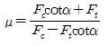
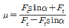
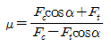
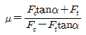
(정답률: 46%)
13. 수퍼피니싱(super finishing)에 관한 설명으로 틀린 것은?
- 가공면은 매끈하고 방향성이 있으며 또한 가공에 의한 표면의 변질층이 매우 크다.
- 숫돌을 진동시키면서 가공물을 가공하는 방법이다.
- 원통형의 외면, 내면, 평면 등의 가공에 쓰이고, 특히 중요한 축의 베어링 접촉부 및 각종 게이지의 가공에 사용된다.
- 입도가 작고, 연한 숫돌을 작은 압력으로 가공물의 표면에 가압하면서 매끈한 표면으로 가공한다.
(정답률: 60%)
14. 선반에서 테이퍼(taper)절삭 방법 중 틀린 것은?
- 테이퍼 절삭장치를 이용하는 방법
- 복식 공구대를 이용하는 방법
- 돌림판과 돌리개를 이용하는 방법
- 심압대를 편위시키는 방법
(정답률: 60%)
15. 스프링 백의 설명으로 틀린 것은?
- 판재를 굽힐 때 하중을 제거하면 원래의 상태로 약간 돌아오는 현상이다.
- 굽힘 반경이 클수록 스프링 백의 양은 커진다.
- 스프링 백의 양이 적을수록 제품의 정밀도가 좋아진다.
- 같은 판재에서 경도가 클수록 스프링 백의 양은 작아진다.
(정답률: 60%)
16. 심냉 처리의 목적으로 알맞은 것은?
- 잔류 오스테나이트를 마텐자이트화 시키는 것
- 잔류 마텐자이트를 오스테나이트화 시키는 것
- 잔류 펄라이트를 오스테나이트화 시키는 것
- 잔류 솔바이트를 마텐자이트화 시키는 것
(정답률: 82%)
17. 정밀입자 가공방법 중 절삭입자 분말을 사용하는 것으로 게이지 블록, 스냅 게이지, 플러그 게이지, 한계 게이지 등 높은 정밀도가 요구되는 부품의 가공에 가장 적합한 것은?
- 래핑(lapping)
- 호닝(honing)
- 버니싱(burnishing)
- 폴리싱(polishing)
(정답률: 66%)
18. 다음 측정기구 중 진직도를 측정하기에 적합하지 않은 것은?
- 실린더 게이지
- 오토콜리메이터
- 측미 현미경
- 정밀 수준기
(정답률: 60%)
19. 강철의 현미경조직 중 강인성과 탄성이 동시에 요구되는 태엽, 스프링, 와이어로프 등에 이용되는 조직은?
- 시멘타이트(cementite)
- 마텐사이트(martensite)
- 오스테나이트(austenite)
- 소르바이트(sorvite)
(정답률: 54%)
20. 절삭유가 갖추어야 할 조건으로 틀린 내용은?
- 마찰계수가 작아야 한다.
- 내압력이 높아야 한다.
- 절삭액의 표면장력이 커야 한다.
- 인화점이 높아야 한다.
(정답률: 59%)
2과목: 재료역학
21. 두 개의 목재 판재를 못으로 조립하여, 그림과 같은 단면을 갖는 목재 조립 보를 제작하였다. 이 보에 전단력이 작용하여, 두 판재의 접촉면에 보의 길이방향으로 균일하게 20kPa의 전단응력이 작용하고 있다. 못 하나의 허용 전단력이 2kN이라 할 때 못의 최소 허용간격은?
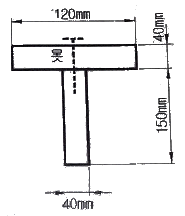
- 0.1m
- 0.15m
- 0.5m
- 0.25m
(정답률: 54%)
22. 그림과 같이 양단이 고정된 단면이 균일한 원형단면 봉의 C점 단면에 비틀림 모멘트 T가 작용하고 있다. AC 구간봉의 비틀림 각을 구하는 미분 방정식은? (단, A, B 고정단에 생기는 고정 비틀림 모멘트는 각각 TA, TB(TA+TB=T)이고, 이 봉의 비틀림 강성은 GIp이다. 또 이 문제에 관한한 비틀림 각 θ의 부호는 무시한다.)
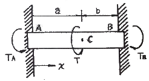
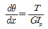
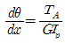
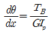
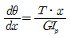
(정답률: 60%)
23. 지름이 d이고 길이가 L인 강봉에 인장하중 P가 작용하고 있다. 강봉의 탄성계수가 E라 하면 강봉의 전체 탄성 에너지 U는 얼마인가?
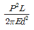
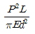
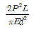
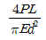
(정답률: 54%)
24. 원형단면을 가진 단순지지 보의 직경을 3배로 늘리고 같은 전단력이 작용한다고 하면, 그 단면에서의 최대 전단응력은 직경을 늘리기 전의 몇 배가 되는가?
- 1/3
- 1/9
- 1/36
- 1/81
(정답률: 70%)
25. 다음 그림과 같이 인장력 P가 작용하는 봉의 경사 단면 A-B에서 발생하는 법선응력과 전단응력이 각각 σn=10MPa, τ=6MPa 일 때, 경사각 Φ는 약 몇 도인가?
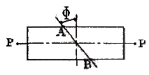
- 25°
- 31°
- 35°
- 41°
(정답률: 64%)
26. 그림과 같이 단순화한 길이 1m의 차축 중심에 집중하중 100kN이 작용하고, 100rpm으로 400kW의 동력을 전달할 때 필요한 차축의 지름은 최소 몇 cm인가? (단, 축의 허용 굽힘응력은 85MPa로 한다.)
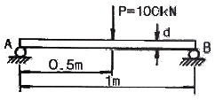
- 4.1
- 8.1
- 12.3
- 16.3
(정답률: 40%)
27. 지름 8cm인 차축의 비틀림 각이 1.5m에 대해 1°를 넘지 않게 하기 위한 최대 비틀림 응력은 몇 MPa 인가? (단, 전단 탄성계수 G=80GPa 이다.)
- 37.2
- 50.2
- 42.2
- 30.5
(정답률: 34%)
28. 양단 힌지로 지지된 목재의 장주가 200mm×200mm의 정사각형 단면을 가질 때 좌굴 하중은 약 몇 kN인가? (단, 길이 L=5m, 탄성계수 E=10GPa, 오일러공식을 적용한다.)
- 330
- 430
- 530
- 630
(정답률: 39%)
29. 그림과 같이 균일분포 하중을 받는 보의 지점 B에서의 굽힘모멘트는 몇 kNㆍm인가?
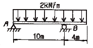
- 16
- 8
- 10
- 1.6
(정답률: 45%)
30. 보가 굽었을 때 곡률 반지름에 대한 설명으로 맞는 것은?
- 단면 2차모멘트에 반비례한다.
- 굽힘 모멘트에 반비례한다.
- 탄성계수에 반비례한다.
- 하중에 비례한다.
(정답률: 39%)
31. 그림과 같이 지름 50mm의 축이 인장하중 P=120kN과 토크 T=2.4kNㆍm를 받고 있다. 최대 주응력은 약 몇 MPa인가?
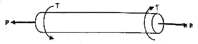
- 61.1
- 97.8
- 133.0
- 158.9
(정답률: 53%)
32. 그림에서 A지점에서의 반력 RA를 구하면 약 몇 N인가?
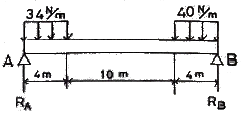
- 107
- 127
- 136
- 139
(정답률: 40%)
33. 그림에서 784.8N과 평형을 유지하기 위한 힘 F1과 F2는?
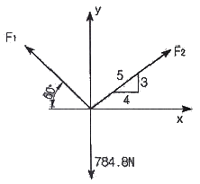
- F1 = 395.2 N, F2 = 632.4 N
- F1 = 632.4 N, F2 = 395.2 N
- F1 = 790.4 N, F2 = 632.4 N
- F1 = 790.4 N, F2 = 395.2 N
(정답률: 56%)
34. 직육면체가 일반적인 3축응력 σx, σy, σz를 받고 있을 때 체적 변형률 ∈v대략 어떻게 표현되는가?
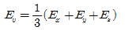
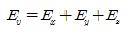
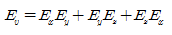
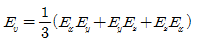
(정답률: 59%)
35. 그림과 같이 집중 하중 P가 외팔보의 중앙 및 끝단에서 각각 작용할 때, 최대 처짐량은? (단, 보의 굽힘 강성 EI는 일정하고, 자중은 무시한다.)
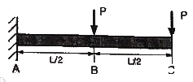
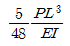
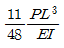
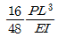
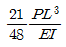
(정답률: 34%)
36. 보의 전 길이(L)에 걸쳐 균일 분포하중이 작용하고 있는 단순보와 양단이 고정된 양단 고정보의 중앙(L/2)에서 발생하는 처짐량의 비는?
- 2 : 1
- 3 : 1
- 4 : 1
- 5 : 1
(정답률: 54%)
37. 일단은 고정, 타단(B지점)은 스프링(스프링상수 K)으로 지지하고, 이 B점에 하중 P를 작용할 때 B지점의 반력은? (단, 보의 굽힘강성 EI는 일정하다.)
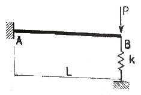
- P
- 0
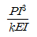
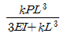
(정답률: 45%)
38. 지름이 2m이고 1000kPa 내압이 작용하는 원통형 압력 용기의 최대 사용응력이 200MPa이다. 용기의 두께는 약 몇 mm인가? (단, 안전계수는 2이다.)
- 5
- 7.5
- 10
- 12.5
(정답률: 40%)
39. 지름 4cm의 둥근 강봉에 60kN의 인장하중을 작용시키면 지름은 약 몇 mm만큼 감소하는가? (단, 탄성계수 E=200GPa, 포아송 비 v=0.33 이라 한다.)
- 0.0⑤13
- 0.00315
- 0.0⑤96
- 0.00⑤96
(정답률: 45%)
40. 다음 그림과 같은 부채꼴의 도심(centroid)의 위치
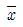
는?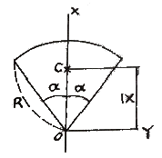
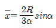
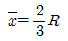
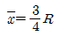
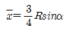
(정답률: 47%)
3과목: 용접야금
41. 리플 편석(ripple segregation) 현상이 바르게 설명한 것은?
- 고용한도의 차에 의한 것이다.
- 아크 중심부와 본드(Bond)의 성분차에 의한 것이다.
- 아크 비드(Bead) 파에 의한 것이다.
- 응고 수축 현상이다.
(정답률: 42%)
42. 용접물의 냉각 조직 중 서냉하여 얻을 수 있는 조직과 가장 관계 없는 것은?
- martensite
- pearlite
- cementite
- ferrite
(정답률: 62%)
43. 재가열 균열의 기구와 그 원인을 지배하는 중요한 인자가 아닌 것은?
- 재가열 온도는 결정립들이나 입계편석에서 재 석출을 조장한다.
- 불순물의 존재는 입계결합강도를 증가시킬 수 있다.
- 이음 형태나 용접 입열량은 재가열중의 변형률 이완량으로 결정된다.
- 예열의 사용은 결정립 크기를 증가시킬 수 있다.
(정답률: 39%)
44. 다음은 열처리된 알루미늄(Al)합금의 용접부 매크로 조직이다. 용접부 매크로 조직 구간에서 연화역은?
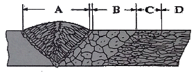
- A
- B
- C
- D
(정답률: 65%)
45. 용접시공 중 발생되는 균열에 있어서 저온균열(cold cracking)의 요인과 가장 거리가 먼 것은?
- 입계석출
- 모재의 경화성
- 확산성 수소량
- 구속응력
(정답률: 36%)
46. 다음 중 금속의 용접성을 향상시킬 수 있는 조건으로 가장 옳은 것?
- 탄소 당량이 낮을수록
- 금속의 열전도도가 낮을수록
- 금속의 온도 확산율이 높을수록
- 동일 입열량에서는 용접재의 두께가 두꺼울수록
(정답률: 59%)
47. 알루미늄의 합금 중에서 내열용 합금으로 맞는 것은?
- Al - Mn계
- Al - Cu - Ni계
- Al - Sn계
- Al - Zn계
(정답률: 79%)
48. 탄소강에 함유된 금속원소 중 편석의 원인이 아닌 것은?
- S
- Mn
- Cu
- P
(정답률: 60%)
49. 주철의 피복아크 용접에 사용되는 용접봉이 아닌 것은?
- 연가용접봉
- 모넬메탈용접봉
- 니켈용접봉
- 티탄용접봉
(정답률: 50%)
50. 18 Cr - 8Ni 스테인리스강에서 입계부식(intergranular corrosion)의 방지법으로 틀린 것은?
- 열처리에 의한 방법
- α철의 형성원소를 첨가하는 방법
- 탄화물의 석출형태를 조절하는 방법
- 탄화물의 안정화 원소를 첨가하는 방법
(정답률: 60%)
51. 금속을 가공하면 전위밀도가 커지면서 이동이 어렵게 되는 현상은?
- 가공경화
- 크리프
- 전위크랙
- 피로현상
(정답률: 69%)
52. 탄소당량(Ceq)이 일반적으로 몇 % 이하일 때 용접성이 양호한 것으로 판단하는가?
- 1.0% 이하
- 0.4% 이하
- 1.6% 이하
- 0.9% 이하
(정답률: 86%)
53. 금속의 자기변태에 대한 설명으로 옳은 것은?
- 순철의 자기변태점은 358℃, 니켈은 768℃, 코발트는 1120℃이다.
- 일정한 온도에서 자기의 강도가 급격히 감소되는 변태이다.
- 자기변태는 원자의 배열 및 격자의 배열 변화만 일어난다.
- 일정온도 이상에서 결정구조는 변화하지만 자성은 잃지 않고 강자성체로 유지된다.
(정답률: 60%)
54. 담금질 온도에서 Ms점보다 높은 온도의 염욕 중에 넣어 항온변태를 끝낸 후에 상온까지 냉각하는 담금질 방법은?
- 마템퍼링
- 오스템퍼링
- 오스포밍
- 마퀜칭
(정답률: 54%)
55. 지연균열(Delayed cracking)을 설명한 것으로 옳은 것은?
- 주로 수소에 의한 것으로 일정 시간 경과하여 발생하는 현상이다.
- 1000℃ 부근의 고온에서 일어나는 현상이다.
- 탄화물 형성에 의한 것이다.
- Fe-FeS 공정조직에 의한 것이다.
(정답률: 86%)
56. 응력 부식 균열에 대한 설명으로 틀린 것은?
- 국부적으로 응력이 집중되었을 때 발생한다.
- 방지책으로 응력제거 풀림을 한다.
- 응력과 부식이 합해져 균열이 생긴다.
- 담금질 처리하면 균열 발생을 억제할 수 있다.
(정답률: 71%)
57. 용접 균열에 대한 설명으로 틀린 것은?
- 저온균열은 강의 마텐자이트 변태에 관련한다.
- 비드 아래 균열은 전형적인 저온균열이다.
- 크레이터 균열은 고온균열이다.
- 고온균열은 주로 결정입내에 발생한다.
(정답률: 50%)
58. 가공한 금속을 어떤 온도로 유지하면 시간의 경과에 따라서 경도나 항복강도가 상승하는 현상은?
- 상호작용
- 변형시효
- 석출시효
- 가공경화
(정답률: 65%)
59. 산소에 의해 발생할 수 있는 가장 큰 용접결함은?
- 은점
- 헤어크랙
- 슬랙
- 기공
(정답률: 73%)
60. 다음 중 용융점이 가장 낮은 것은?
- 티탄
- 마그네슘
- 알류미늄
- 주석
(정답률: 54%)
4과목: 용접구조설계
61. 다음 그림과 같은 용접 이음의 종류는?
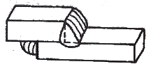
- 맞대기 이음
- 겹치기 이음
- T형 이음
- 모서리 이음
(정답률: 94%)
62. 용접부의 잔류 응력을 완화시키는 방법이 아닌 것은?
- 피닝법
- 기계적 응력 완화법
- 저온 응력 완화법
- 응력 와니스법
(정답률: 56%)
63. 용접성 시험법 중 시험편에 노치(notch)를 만들지 않고 시험하는 것은?
- 킨젤(Kinzel) 시험
- 반데어 비인(Van der veen) 시험
- 로버트슨(Roberrson) 시험
- 피스코(Fisco) 균열 시험
(정답률: 47%)
64. 용접 이음부의 형태를 설계할 때 고려사항으로 틀린 것은?
- 가능한 용착 금속량이 많은 이음 모양이 되도록 할 것
- 적당한 ㄹ트 간격과 홈 각도를 선택할 것
- 균열이 생기기 쉬우므로 너무 깊은 홈을 피할 것
- 후판의 용접에서는 한면 V형 홈보다 양면 V형 홈을 선택할 것
(정답률: 82%)
65. 용접 구조물의 가접시 주의사항에 대한 설명으로 틀린 것은?
- 용접봉은 본 용접작업시에 사용하는 것 보다 약간 가는 것을 사용한다.
- 일반적인 가접 간격은 판 두께의 15~30배 정도로 한다.
- 판 두께가 3.2mm 이하 일 때 가접 비드의 길이는 약 50mm 정도로 한다.
- 큰 구조물에서 가접 길이가 너무 짧으면 용접부가 급냉 경화하여 용접균열이 생기기 쉽다.
(정답률: 68%)
66. 용접물을 정반에서 고정시키든지 보강재 또는 일시적인 보조판을 붙여 변형을 방지하는 방법으로 가장 널리 사용되는 용접변형 방지법의 종류는?
- 억제법
- 탄성 역변형법
- 교호법
- 피닝법
(정답률: 78%)
67. 다음 그림과 같은 용접 순서와 방향을 가지는 용착법은?
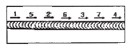
- 스킵법
- 전진법
- 후퇴법
- 대칭법
(정답률: 84%)
68. 서브머지드 아크 용접에 균열이 발생하였다. 그원인으로 잘못 설명한 것은?
- 모재에 탄소(C)양이 많았다.
- 열영향부가 서냉 되었다.
- 용착금속은 Mn양이 적었다.
- 모재 성분에 편석이 있다.
(정답률: 84%)
69. 다음 중 다층용접에서 층을 쌓는 방법이 아닌 것은?
- 덧살 올림법
- 전진 블록법
- 케스케이드법
- 비석법
(정답률: 76%)
70. 그림과 같이 지름 100mm인 둥근 단면 강재에 1500kgfㆍm의 비틀림 모멘트가 작용을 하고 전둘레 용접을 할 때 용접선에 생기는 응력은 약 kgf/mm2 인가?
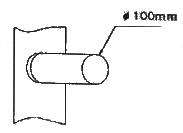
- 70.5
- 82.4
- 95.5
- 1⑤.6
(정답률: 50%)
71. 인장시험에서 시험 전 표점거리가 50cm의 시험편을 사용하여 시험한 후 절단된 표점거리가 79cm일 때 연신율은?
- 29%
- 50%
- 58%
- 79%
(정답률: 65%)
72. 용접구조물의 피로강도는 향상시키기 위한 방법이 아닌 것은?
- 열이나 기계적 방법으로 잔류응력을 완화시킬 것
- 냉간가공 등에 의하여 기계적인 강도를 낮출 것
- 다듬질 등에 의하여 단면이 급변하는 부분을 피할 것
- 가능한 응력 집중부에ㅐ는 용접 이음부를 설계하지 말 것
(정답률: 88%)
73. 그림과 같은 불용착부가 있는 T형 맞대기 이음에서 거리 L =120cm, 하중 P = 500kgf가 작용되고 있을 때 용접부에 생기는 최대 굽힘 응력은 약 몇 kgf/mm2인가? (단, 용접 길이 ℓ = 240mm, 판 두께 t = 36 mm, 홈 깊이 h = 12mm 이다.)
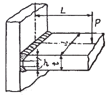
- 1.2
- 1201
- 12
- 120
(정답률: 43%)
74. 피닝법(peening method)의 주목적이 아닌 것은?
- 잔류 응력의 완화
- 용접 변형의 경감
- 가공경화에 따른 인성 증가
- 용착 금속의 균열 방지
(정답률: 58%)
75. 그림과 같은 굽힘을 받는 용접부 선형의 중립 축 X-X'에 대한 단면 2차 모멘트로 가장 적합한 것은? (단, 용접두께 t = 로 보고 계산한 식이다.)
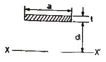
- ad2
- 2d2
- 2ad2
- d2
(정답률: 64%)
76. 용접 구조물 검사에 많이 이용되는 [그림]과 같은 초음파 탐상 검사 방법은?
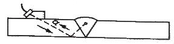
- 수직 탐상법
- 수평 탐상법
- 사각 탐상법
- 삼각 탐상법
(정답률: 56%)
77. 필릿 용접이음과 맞대기 용접이음을 비교 설명한 것 중 틀린 것은?
- 필릿 용접이음은 맞대기 용접이음보다 정밀도가 필요치 않아 공작이 쉽다.
- 필릿 용접이음은 맞대기 용접이음보다 결함이 생기기 쉽다.
- 맞대기 용접이음은 칠릿 용접이음보다 변형 및 잔류 응력이 크다.
- 맞대기 용접이음은 필릿 용접이음보다 부식에 크게 영향을 받는다.
(정답률: 57%)
78. 용접변형 방지법 중 구속(억제)법에 대한 설명으로 틀린 것은?
- 적당한 지그가 없는 경우 스크롱 백을 사용한다.
- 스테인리스강 박판 맞대기 이음의 경우 동판을 조합시킴 구속 지그를 이용하는 것이 유효하다.
- 맞대기 용접의 경우 잭으로 판을 구속하거나 중량물을 올려놓는다.
- 홈 및 루트간격을 용접이 가능한 범위에서 최대화 한다.
(정답률: 68%)
79. 용접부의 연성 결함을 조사하기 위하여 사용되는 시험법으로 용접사의 기량 점검에 이용되고 있는 시험법은?
- 압력시험
- 굽힘시험
- 피로시험
- 초음파시험
(정답률: 82%)
80. 초음파 탐상법에서 통상적으로 적용하는 주파수 범위로 가장 적합한 것은?
- 0.5 ~ 15 MHz
- 15 ~ 25 MHz
- 25 ~ 100 MHz
- 100 ~ 1000MHz
(정답률: 79%)
5과목: 용접일반 및 안전관리
81. 아크 쏠림(arc blow)의 방지 대책으로 틀린 것은?
- 용접부가 긴 경우 후퇴 용접법으로 할 것
- 짧은 아크를 사용할 것
- 교류 용접 대신 직류 용접으로 할 것
- 접지점을 될 수 있는 대로 용접부에서 멀리할 것
(정답률: 69%)
82. 피복금속 아크 용접시 용접기의 1차 입력이 25kVA 일 때 용접기의 1차측에서 설치할 안전 스위치에 몇 A의 퓨즈를 붙이면 적당한가? (단, 이 용접기의 입력 전압은 200V이다.)
- 80A
- 100A
- 125A
- 150A
(정답률: 88%)
83. 돌기용접(projection welding)의 설명 중 틀린 것은?
- 열전도나 열용량이 다른 재료도 쉽게 용접할 수 있다.
- 전극의 수명이 길다.
- 제품의 신뢰도가 높다.
- 정밀도가 낮은 돌기를 만들어도 정확한 용접이 된다.
(정답률: 83%)
84. 피복 아크 용접봉 중 내균열성이 가장 낮은 용접봉은 어느 계통인가?
- 저수소계
- 일미나이트계
- 고셀룰로로스계
- 티탄계
(정답률: 50%)
85. 아크 용접시 전안염을 일으키는 주 요인은?
- 슬랙의 비산
- 아크 빛
- 스패터링
- 감전
(정답률: 82%)
86. 서브머지드 아크 용접의 특징으로 틀린 것은?
- 적용 재료의 제약을 받는다.
- 흄(fume) 등의 발생이 적어 작업 환경이 양호한 편이다.
- 와이어에 고전류를 흘려 줄 수 있다.
- 전자세 용접에 주로 사용 된다.
(정답률: 84%)
87. 피복 아크 용접봉의 피복 배합제 성분 중 탈산제가 아닌 것은?
- 규소철
- 망간철
- 산화티탄
- 알루미늄
(정답률: 62%)
88. 가스용접 작업시 전진법과 후진법의 비교에서 틀린 것은?
- 열이용률 : 전진법이 나쁘다.
- 용접속도 : 전진법이 느리다.
- 용접변형 : 후진법이 크다.
- 용접가능 판 두께 : 후진법이 두껍다.
(정답률: 54%)
89. 정격 2차전류가 200A, 정격 사용률 50%인 아크 용접기로 150A의 용접 전류를 사용하여 용접하는 경우 허용 사용률은 약 몇 %인가?
- 60%
- 70%
- 80%
- 90%
(정답률: 38%)
90. 2개의 모재에 압력을 가해 접촉시킨 다음 서로 상대운동을 시켜 접촉면에서 발생하는 열을 이용하여 이음면 부근이 압접온도에 도달되었을 때 압력을 가래 업셋시키고, 상대운동을 정지시켜 완성하는 용접법은?
- 마찰 용접
- 초음파 용접
- 냉간 압접
- 저항 용접
(정답률: 84%)
91. 냉간 압접의 특징 설명으로 틀린 것은?
- 용접부에 열 영행이 없다.
- 철강 재료의 냉간 압접은 용이하다.
- 용접부가 가공 경화된다.
- 접합부의 전기저항은 모재와 거의 같다.
(정답률: 35%)
92. 일반 경구조물의 용접에 많이 사용되며, 아크는 안정되며 스패터가 적고 슬래그의 박리성도 좋아 비드의 표면이 고우며 작업성이 우수항 것이 특징이나 고온 균열(hot crack)을 일으키기 쉬운 결점이 있는 용접봉은?
- E4303
- E4311
- E4313
- E4316
(정답률: 50%)
93. 다음 중 TIG용접에 사용되는 전극의 조건이 아닌 것은?
- 고용융점의 금속
- 전기 저항률이 큰 금속
- 열 전도성이 좋은 금속
- 전자 방출이 잘 되는 금속
(정답률: 52%)
94. 용접봉을 모재에 접촉한 순간에만 릴레이(relay)가 작동하여 용접작업이 가능하도록 되어있는 교류 아크 용접기 부속장치는?
- 원격제어 장치
- 핫 스타트 장치
- 전격방지 장치
- 고주파 발생장치
(정답률: 60%)
95. 두게 0.4~0.6mm의 연강판을 점(spot) 용접 할 경우 최소 피치로 적당한 것은?
- 2 ~ 3 mm 정도
- 8 ~ 10 mm 정도
- 15 ~ 20 mm 정도
- 23 ~ 35 mm 정도
(정답률: 53%)
96. 피복 아크 용접과 비교하여 탄산가스(CO2) 아크 용접에 대한 일반적인 설명으로 틀린 것은?
- 용착속도가 빠르다.
- 용착효율이 낮다.
- 용입이 깊다.
- 작업눙률이 높다.
(정답률: 77%)
97. 다음 중 심(seam) 용접의 종류에 해당하지 않는 것은?
- 맞대기 심 용접
- 프로젝셩 심 용접
- 포일 심 용접
- 매시 심 용접
(정답률: 45%)
98. 산소 용기게 각인된 기호 중 최고 충전 압력을 표시하는 기호는?
- WP
- FP
- VP
- TP
(정답률: 70%)
99. 가동 철심형 교류 아크용접기의 특성이 아닌 것은?
- 광범위한 전류 조정이 어렵다.
- 미세한 전류 조정이 불가능하다.
- 중간 이상 가동철심을 빼내면 아크가 불안정하게 되기 쉽다.
- 현재 가장 많이 사용한다.
(정답률: 49%)
100. 용접법을 융접과 압접으로 분류할 때 압접에 해당하는 것은?
- 유도 가열 용접
- 산소 수소 용접
- 스터드 용접
- 전자 빔 용접
(정답률: 36%)